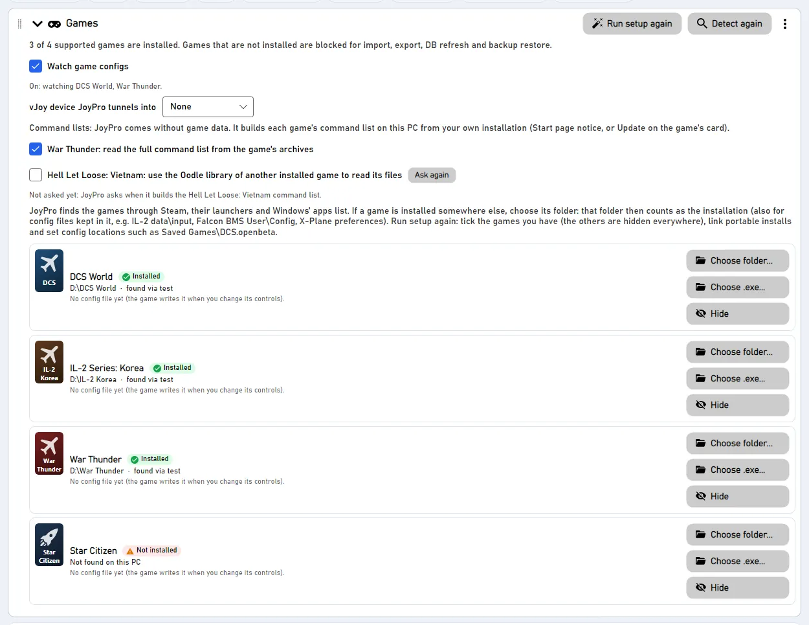

#專案頁面
按鈕已撰寫工具提示 在瀏覽器中開啟該元件的官方發行頁面
在元件卡片上：在瀏覽器中開啟元件的官方發佈頁面，該專案會在那裡介紹它並提供下載。
「設定」頁面把 JoyPro 的所有設定放在 25 個可展開和收合的區段中。搜尋方塊可以用一個詞找到設定（「系統匣」、「更新」、「照片」），頂端的分頁可以跳到某個區段，您也可以自己排列區段的順序。每項設定都會立即保存，重新啟動後也還在；沒有「儲存」按鈕。


第一次啟動時只會展開 遊戲；其他區段只要點一下就能打開。大多數人只會用到 遊戲、外觀、語言 和 關於 JoyPro 與更新。
| 區段 | 您在那裡設定的內容 |
|---|---|
| 遊戲 | 您有哪些遊戲、連結的資料夾、遊戲設定檔監看程式、JoyPro 使用的 vJoy 裝置 |
| 綁定 | 跟隨輸入、錄製保持按下狀態的按鈕 |
| 導覽 | 歡迎畫面、說明模式（F1）和每個導覽，可重新開始 |
| 啟動 | 啟動時開啟最近的設定檔 |
| 底部列中的頁面 | 隱藏頁面、變更它們的順序 |
| 語言 | JoyPro 的語言 |
| 外觀 | 淺色、深色或您自己的色彩、文字大小、介面縮放、佈景主題編輯器 |
| 在背景執行 | 持續監看您遊戲的系統匣小幫手 |
| 確認 | JoyPro 在變更前會問的問題 |
| 關於 JoyPro 與更新 | 版本、專案頁面、更新 |
| 隱私權 | 製造商照片、圖片包、遊戲封面 |
| 使用統計 | 「統計」頁面、您最常用飛機的排名 |
| 遙測錄製 | 像 Tacview 一樣錄製您的飛行 |
| 線稿 | JoyPro 如何繪製您的裝置；重設您的配置變更 |
| 回報問題 | 一個 zip，包含找出問題所需的一切 |
| 本機 AI | 選用的語言模型 |
| 元件 | vJoy、HidHide、ViGEmBus 和其他選用程式 |
| 裝置 | 您的裝置、它們的名稱、取代或移除裝置 |
| 指令清單（DB）和遊戲路徑 | 專家資訊 |
| DCS：預設綁定 | DCS 安裝中 DCS 自己的預設綁定 |
| DCS、Star Citizen 和 IL-2 的指令清單 | 指令清單的專家更新 |
| 遊戲的力回饋設定 | 遊戲自己的力回饋選項 |
| DCS 力回饋：交換與反轉 | 每個裝置的 DCS 力回饋方向 |


JoyPro 支援且您擁有的每款遊戲一張卡片，顯示它的封面、「已安裝」或「未安裝」、它的位置，以及它存放控制設定的位置。
gui.vromfs.bin 和 lang.vromfs.bin，取得每個飛機和直升機的動作。關閉：只使用 JoyPro 自己已知的 War Thunder 動作清單。在這裡不會變更遊戲中的任何東西。連結的資料夾決定匯入和匯出從哪裡讀取、寫入到哪裡；隱藏的遊戲不會有匯出卡片，也不會被監看。


您對設定精靈問題 您使用頭部追蹤或 VR 嗎？ 的回答。使用頭部追蹤（TrackIR、具臉部追蹤的網路攝影機、Tobii 眼動追蹤器）或 VR 時，您是轉頭來環顧四周。
JoyPro 的所有導覽都集中在一處（說明模式與導覽）：


啟動時開啟最近的設定檔（預設開啟）會開啟您上次開啟的設定檔；路徑會顯示在下方。附註會說明設定檔的歷程記錄：每項變更都會自動儲存，每次儲存都是 歷程記錄（頂端列）中的一個版本。舊版本會逐漸精簡：最近一天全部保留，之後 7 天內每小時保留一個、60 天內每天一個，再之後每週一個；每個設定檔最多 200 MB，全部最多 1 GB。您保留的版本會一直留著。


底部列的每個頁面一列。取消勾選您不用的頁面；拖曳列的把手（或使用箭頭）來變更順序。隱藏的頁面仍然可以從其他頁面開啟（例如 開啟「修飾鍵」頁面），開啟時也會顯示在列中。「設定」無法隱藏。重設為預設值 會恢復 JoyPro 的順序，並顯示所有頁面。


JoyPro 的語言：英文和其他 38 種語言，或 Windows 語言（Windows 的顯示語言；如果 JoyPro 沒有該語言，則使用英文）。翻譯是由機器產生的，聽起來可能有點奇怪；遊戲指令名稱會保持遊戲中的名稱。系統匣小幫手的選單會跟著語言變更。


只有在 JoyPro 執行時，它才能注意到您在遊戲中變更了控制設定。關閉 JoyPro 後，一個很小的小幫手會以系統匣圖示的形式持續監看；它幾乎不佔用 CPU，只使用幾 MB 的記憶體。


JoyPro 會在難以撤回的變更之前先詢問。您可以關閉的問題都列在這裡：從關聯中移除動作、會捨棄您尚未匯出的變更的匯入、首次匯出到設定檔從未匯入過的遊戲、會移除綁定的匯出，以及匯入時的監看程式提示。您用「不再詢問」關閉的問題會在這裡顯示為未勾選；重新詢問所有內容 會把它們全部重新開啟。


版本、組建和授權資訊、專案頁面 和 發佈頁面、第三方聲明，以及更新：檢查更新、安裝更新（下載新版本、檢查它、安裝它並重新啟動 JoyPro）、啟動時檢查更新，以及針對您跳過的版本的 再次提示。「更新來源（供進階使用者）」會寫出 JoyPro 從哪個 GitHub 儲存庫的發佈版本安裝更新。


JoyPro 沒有帳號，也沒有遙測。它只會在以下情況連上網路：檢查更新、製造商的產品照片（在您同意後）、這台電腦上缺少的遊戲封面、下載選用的 AI 模型、選用的驅動程式，以及缺少的 .NET Framework。


JoyPro 會根據遊戲自己的記錄檔和 Steam 的遊玩時數，記下您使用了哪些遊戲、飛機和太空船，並在這台電腦上保留一份摘要。


錄下每一回合、任務或飛行，包含遊戲傳送的所有遙測資料（位置、姿態、速度、操控、引擎、武器、事件），就像 Tacview 為 DCS 所做的一樣，適用於 JoyPro 能讀取遙測資料的每款遊戲。


JoyPro 如何在「配置」頁面和裝置卡片上繪製您的裝置（線條或卡通著色、JoyPro 的色彩或您自己的色彩），螢幕與速查表和匯出分開設定。重設我所有的配置變更... 會把每個裝置的圖片恢復成 JoyPro 的預設值（您的標記位置、表格和連線、重新命名的部分、照片、自訂的裝置定義，以及設定檔使用的配置檔；檔案本身會保留）；之後立刻按 復原重設 可以把它們找回來。只針對單一裝置：在「配置」頁面使用它的 型號... 選單。繪圖控制項的說明請參閱 配置。


下方有 背景記錄保留 n 天（預設 30 天；合計最多 200 MB）和 開啟記錄資料夾。


選用。JoyPro 的離線規則一律有效；免費的開放原始碼語言模型還能在「以 AI 管理」、「以 AI 編輯」、JoyPro 助理和「依描述分組」中理解自由輸入的句子，而 JoyPro 會檢查每個回答。它只會在您使用時於這台電腦上執行。
llama-server.exe 和 .gguf 檔案的路徑、在此電腦上尋找、使用這些檔案、停止使用。


重新偵測 會為每支已連接的搖桿、油門和腳舵，以及設定檔使用的每個裝置顯示一張卡片：它的圖片（點一下會在「配置」頁面開啟該裝置）、名稱、是否已連接，以及它有多少個綁定。


在「輸出」面板中以唯讀方式回答 JoyPro 對每款遊戲所知的內容：DB 摘要、DB 檢查、DB 清單、DB 遊戲、DB 飛機、DB 指紋、遊戲路徑、遊戲清單、偵測遊戲，可依遊戲和飛機篩選。要在更新後讀取遊戲的新指令，請在「開始」頁面的遊戲卡片上使用 更新。


DCS 會在每個裝置上放它自己的預設綁定。JoyPro 的 DCS 匯出本來就會在每架飛機中，從它寫入的每個裝置上移除這些綁定。這裡的兩個選項會變更 DCS 安裝本身，對 所有 裝置生效；除非您開啟，否則兩者都是關閉的。
<file>.nocombo.bak。保留 UI 層的預設綁定（選單、VR） 會讓 UI 層保持原樣。這些選項會變更 DCS 自己的檔案。有些多人連線伺服器在它們開啟時不讓您進入；還原 DCS 檔案 會把 DCS 的檔案放回去。DCS 更新或修復會把原始檔案帶回來；JoyPro 會在下次啟動時再次套用該選項。


通常遊戲的清單是用「開始」頁面上該遊戲卡片的 更新 建立的。這裡則提供：只更新部分 DCS 飛機、不寫入的測試執行，以及舊的點擊模式。


遊戲提供的每項力回饋設定（強度、效果、每個裝置，在 DCS 中還有每架飛機）。JoyPro 會把您設定的值存入設定檔，並在匯出時寫入遊戲；您沒有儲存的設定會保持遊戲中的值。選擇 遊戲、裝置 和 飛機（所有飛機，或以其數值為準的單一飛機），變更數值，然後按 套用。還原 會捨棄尚未套用的變更，某一列上的 取消設定 會停止儲存該項設定，清除 會移除顯示的所有已儲存設定。JoyPro 自己的遙測力回饋在 力回饋 頁面上。


如果您的力回饋搖桿在 DCS 中往錯誤的方向推：為它勾選 對調軸、反轉 X 或 反轉 Y，然後按 套用。清除 會讓裝置恢復 DCS 的預設值。另有一張裝置表格，附有篩選條件（僅已連接、僅設定檔中的）、選取按鈕和 套用選取項目／清除選取項目／全部清除；「手動單一裝置（進階）」可依名稱設定單一裝置。
DCS 會在啟動時讀取每個裝置的力回饋方向：對調或反轉過的裝置，在每架飛機中都會往另一個方向推。
%APPDATA%\JoyPro2\ui-settings.json（視窗、頁面、展開的區段及其順序、佈景主題、語言、確認、隱私權回答、系統匣、本機 AI 選擇 ...），每次變更都會立即寫入；佈景主題以 JSON 檔案存放在它旁邊。檢視模型：MainWindowViewModel.SettingsPage.cs（區段、搜尋、順序；SettingsSectionDefaults 保存 ID、標題和搜尋關鍵字），控制項 Views/Controls/SettingsSection.cs、SettingsSectionsPanel.cs、SettingsTabStrip.cs。engine games installs、engine games install set、engine games install disable、engine games config set（MainWindowViewModel.GameInstalls.cs、GameSetup.cs）。MainWindowViewModel.NavPages.cs；外觀：MainWindowViewModel.Appearance.cs、Services/ThemeService.cs；語言：MainWindowViewModel.Language.cs（在地化）。MainWindowViewModel.Updates.cs（更新）；回報：MainWindowViewModel.AppServices.cs、engine support bundle（記錄）。engine usage harvest、engine usage ranking、engine usage pin（使用統計）；遙測錄製：MainWindowViewModel.TelemetryRecording.cs、engine telemetry sessions、engine telemetry export（遙測錄製）。engine llm status、engine llm download、engine llm use-local、engine llm start（自然語言分組）；元件：MainWindowViewModel.Components.cs（元件）。engine devices list、engine devices inputs、engine devices exchange、engine devices remove、engine games devices（裝置）。engine dcs strip-defaults、engine dcs device-luas、engine dcs defaults restore（MainWindowViewModel.DcsDefaults.cs）；指令清單：engine dcs refresh id、engine dcs refresh clean、engine db refresh-starcitizen、engine db refresh-il2；進階 DB 查詢：engine db summary、engine db check、engine db list、engine db games、engine db planes、engine db fingerprint、engine games paths、engine games list、engine games detect。engine ffb models、engine ffb show、engine ffb set、engine ffb clear（儲存在設定檔中，匯出時寫入；MainWindowViewModel.FfbSettings.cs）；DCS 對調/反向：engine dcs ffb list、engine dcs ffb set、engine dcs ffb clear。本頁背後的功能文件，從儲存庫產生：
190 個控制項，從程式的原始碼讀取：190 個已撰寫，0 個附有來自原始碼的資訊（工具提示、程式碼註解、引擎呼叫），0 個尚待補充。
工具提示 在瀏覽器中開啟該元件的官方發行頁面
在元件卡片上：在瀏覽器中開啟元件的官方發佈頁面，該專案會在那裡介紹它並提供下載。
工具提示 修復或解除安裝：開啟 Windows 的已安裝應用程式清單，其中有該元件自己的解除安裝程式
在元件卡片上：在瀏覽器中開啟元件官方專案頁面上的授權。
工具提示 開啟：動作的 x 會先詢問「移除此動作？」。關閉：立即移除 (Ctrl+Z 可復原)。
工具提示 開啟：如果設定檔中有該遊戲尚未寫入遊戲的變更，遊戲卡片上的匯入會先詢問（先匯出、匯入、取消）。關閉：立即匯入（歷程記錄可還原這些變更）。
工具提示 您關閉的所有詢問都會再次詢問
工具提示 以已設定的模型開啟本機 AI；它會在下一個要求時載入
工具提示 開啟「設定 > 本機 AI」：下載模型（會先顯示大小與授權）或使用您自己的 llama.cpp
「本機 AI」標籤上的「設定本機 AI」：開啟「設定 > 本機 AI」並捲動到那裡，您可以在那裡下載模型，或讓 JoyPro 使用您自己的 llama.cpp。
它本身不會變更任何東西。
工具提示 立即結束本機 AI 模型並釋放其記憶體（下一個要求會重新載入）
工具提示 開：當下方某個遊戲執行並傳送遙測時，JoyPro 會為每一局、每個任務或每次飛行寫入一個檔案。關：不錄製任何內容，也不查找任何內容。
預設為關閉。開啟：當已勾選的遊戲在執行並傳送遙測資料時，JoyPro 會為每一回合、任務或飛行寫入一份錄製到下方的資料夾。
關閉：不會錄製任何東西，JoyPro 也不會尋找正在執行的遊戲。
工具提示 錄製檔案的儲存位置，可在任意磁碟機上（選一個有可用空間的磁碟機：一小時約 10 到 50 MB）
工具提示 返回 JoyPro 的資料所在資料夾
在檔案總管中開啟錄製資料夾。
工具提示 在數值旁保留遊戲自己的封包、回應和檔案，供讀取它們的工具使用。大小約為兩倍。
從錄製資料夾重新讀取已錄製工作階段的清單。
工具提示 可由 Tacview 開啟的 .zip.acmi 檔案：航跡、姿態、速度以及遊戲回報的其他物件。僅適用於遙測含位置的遊戲。
工具提示 一個資料夾，內含一張依時刻列出所有數值的表格、事件、通道清單，以及每個通道一個小檔案（以逗號分隔，小數點）。
把選取的錄製寫成一個包含 CSV 檔案的資料夾，存到錄製旁邊的 Exports 資料夾：一個表格列出每個時間點的所有值，另外還有事件、通道清單，以及每個通道一個小檔案。
檔案總管會開啟這個資料夾。
刪除選取的錄製。
「搜尋設定」中的 x：清除搜尋，讓每個區段再次顯示。
收合每個區段，讓頁面只顯示它們的標題；點一下您需要的區段即可展開。
工具提示 淺色配色
工具提示 深色配色
工具提示 跟隨 Windows 設定
工具提示 以此佈景主題顯示 JoyPro
工具提示 在下方的佈景主題編輯器中開啟
工具提示 佈景主題的文字大小，或 100%
「文字大小」旁邊的「重設」：取消您選擇的文字大小，讓目前佈景主題的文字大小再次生效；如果佈景主題沒有設定，就使用 100 %。
工具提示 恢復為 100%
「介面縮放」旁邊的「重設」：整個視窗恢復為 100 %。
佈景主題編輯器：用 JoyPro 的深色配色開始一個新的佈景主題，並在編輯器中開啟它。
工具提示 別人分享給您的佈景主題檔案（.json）
工具提示 將文字色彩調亮或調暗，直到所有文字清晰易讀
工具提示 儲存並以此佈景主題顯示 JoyPro
為正在編輯的佈景主題建立副本，並在編輯器中開啟這個副本，用來製作您喜歡的佈景主題的變化版。
工具提示 將佈景主題儲存為檔案以便分享
把正在編輯的佈景主題儲存為 .json 檔案，存到您選擇的位置，用來保留副本或分享；其他人可以用「匯入...」載入它。
工具提示 將所有色彩恢復為所根據的佈景主題，並將字型恢復為 JoyPro 的字型
刪除正在編輯的佈景主題的檔案。如果它是正在使用的佈景主題，JoyPro 會改回內建的佈景主題。
工具提示 首次啟動設定：您擁有哪些遊戲、連結的資料夾（可攜式安裝）與設定位置
重新尋找您的遊戲，例如在您安裝或移動某個遊戲之後，並更新這裡的卡片、「開始」頁面和「匯出」頁面。
工具提示 當您在遊戲中變更 JoyPro 所管理的操控設定時，JoyPro 會在遊戲關閉後詢問是否將其帶入您的設定檔
預設為開啟：當您在遊戲中變更 JoyPro 管理的操控設定時，JoyPro 會在遊戲關閉後發現，並詢問是否要把這些變更放進您的設定檔。
被監看的是您曾匯出或匯入過、並在「開始」頁面勾選要監看的遊戲。
工具提示 開啟（預設）：JoyPro 會解開 gui.vromfs.bin 與 lang.vromfs.bin（唯讀），以取得每個飛機與直升機動作。關閉：JoyPro 僅使用自己已知的 War Thunder 動作清單。
預設為開啟：JoyPro 建立 War Thunder 指令清單時，會解開遊戲的 gui.vromfs.bin 和 lang.vromfs.bin，以取得每個飛機和直升機動作。
關閉：JoyPro 只使用它自己已知的 War Thunder 動作清單。
工具提示 HLL Vietnam 的檔案採用 Oodle 壓縮，且遊戲本身未附帶 Oodle 程式庫。若您同意，JoyPro 會使用此電腦上另一款遊戲附帶的程式庫（直接從其所在位置使用，絕不複製）。關閉：使用 JoyPro 自己的手把按鍵清單，這已足以應付 Xbox 手把模式。
您對 JoyPro 建立 Hell Let Loose: Vietnam 指令清單時所問問題的回答：勾選時，JoyPro 會使用另一個已安裝遊戲附帶的 Oodle 程式庫（直接從它所在的位置）讀取這個遊戲的壓縮檔案。
未勾選：使用 JoyPro 自己的遊戲手把按鍵清單，這就是「Xbox 手把」模式所需的全部內容。
忘記您對 Hell Let Loose: Vietnam 檔案的回答；JoyPro 下次建立該遊戲的指令清單時會再次詢問。
工具提示 該資料夾隨後會被視為遊戲的安裝位置（遊戲的資料夾、其啟動器資料夾或其 bin 資料夾）
工具提示 請選擇遊戲的 .exe 或其啟動器；JoyPro 會連結遊戲的資料夾
遊戲卡片上的「選擇 .exe...」：選擇遊戲的程式或它的啟動器；JoyPro 會為它連結遊戲的資料夾，就像「選擇資料夾...」一樣。
工具提示 忘記您的資料夾並重新偵測遊戲
工具提示 您沒有它或不感興趣：在 JoyPro 中到處隱藏（卡片、匯出、監看、遊戲清單）；視為未安裝。您對它的綁定會保留。
工具提示 按下按鈕（或大幅移動軸），「綁定」或「關聯」頁面就會跳到其關聯；再按一次會跳到它上面的下一個關聯，沒有修飾鍵的優先。錄製或在方塊中輸入文字時不生效。
預設為開啟：按下一個按鈕，「綁定」或「關聯」頁面就會跳到它的關聯；再按一次會跳到它上面的下一個關聯，沒有修飾鍵的會排在前面。
在錄製或在輸入框中打字時不會作用，而且只在 JoyPro 的視窗位於最前面時才會作用。
工具提示 跟隨輸入跳轉後，在清單底部顯示的簡短提示（BTN 8 on WarBRD: Gear）。關閉時清單仍會跳轉。
工具提示 「錄製」只取得狀態會改變的按鈕；錄製開始時已按下的按鈕（三段開關的中間位、模式開關）永遠不會被計入。勾選後：放開會被計為該按鈕。
工具提示 開：在名稱相符下方列出「相同功能」（依同義詞或描述找到的相同功能）與「相關」（已摺疊）。關：只顯示名稱包含您輸入之每個字詞的動作。全部 / 軸 / 按鈕 旁也有同一個開關。
如果你靠轉動頭部環顧四周，請選這個。
如果您用頭部追蹤、Tobii 眼動追蹤器或 VR 環顧四周，或打算購買，請選這個。
之後的每次設定都不會在飛行模擬遊戲中往您的 HOTAS 上放視角或環顧按鈕，只放一個視角重新置中按鈕，讓您的按鈕留給其他功能。
如果你用搖桿上的帽子開關環顧四周，請選這個。
如果您用搖桿或油門環顧四周，請選這個。
之後的每次設定都會以高優先順序把環顧四周放到帽子開關或拇指搖桿上：緊接在機砲、武器投放、反制措施、煞車、配平和目標之後。
工具提示 為這些模擬開啟設定精靈
把這個頁面在清單中往下移一位，也就是在底部列中往右移一位。
工具提示 JoyPro 的頁面順序，顯示所有頁面
把底部列的頁面恢復成 JoyPro 的順序，並再次顯示每個頁面。
工具提示 首次啟動時的問題：您想做什麼，以及哪個導覽適合您
工具提示 點選任何項目即可了解其功能；按 F1 或 Esc 結束
點選這裡，然後點選任一按鈕即可了解它的作用。
「說明模式」會開啟說明模式：點選任何按鈕、欄位、清單列或分頁時，不再執行它，而是顯示它的功能。
按 F1、Esc 或頂端的「結束說明模式」即可結束。
工具提示 下次啟動時再次顯示歡迎畫面，且所有導覽都視為未看過
工具提示 在導覽和說明中使用大字和很短的句子。適合兒童，也適合任何想要簡單的人。
工具提示 下方導覽只顯示您需要的步驟
工具提示 下方導覽顯示所有步驟，包括額外功能
工具提示 開始此導覽
工具提示 視窗顯示後，JoyPro 會立即開啟您上次開啟的設定檔。取消勾選則啟動時不開啟任何設定檔。
工具提示 登入 Windows 時，系統匣輔助程式會自行啟動；JoyPro 視窗不會開啟。不需要系統管理員權限；取消勾選即可再次從 Windows 啟動項目中移除。
工具提示 關閉 JoyPro（X）後，系統匣輔助程式會繼續監看您的遊戲。取消勾選後，關閉 JoyPro 也會結束監看。
工具提示 GitHub 上的 JoyPro：原始碼、發佈版本、問題回報
在瀏覽器中開啟 JoyPro 在 GitHub 上的專案頁面：包括原始碼、發佈版本和問題回報。
工具提示 每個版本及其更新內容
在瀏覽器中開啟 JoyPro 在 GitHub 上的發佈版本：每個版本都列出變更內容。
工具提示 向 GitHub 查詢 JoyPro 的最新版本；更新的版本會連同更新內容一起提示
向 GitHub 查詢 JoyPro 的最新版本，並一律告訴您找到了什麼：如果有較新的版本，會連同變更內容一起提供，否則會顯示「JoyPro2 已是最新」。
您略過的版本也會在這裡提供。
工具提示 下載新版本，檢查並安裝，然後重新啟動 JoyPro
工具提示 JoyPro 每次啟動時向 GitHub 查詢一次是否有新版本，並在更新前詢問您
您曾在更新提示中選擇「略過此版本」：這會忘記那個選擇，讓下一次檢查再次提供這個版本。
工具提示 忘記您為各裝置做出的是/否回答；JoyPro 在顯示製造商照片前會再次詢問
工具提示 當出現一台參考照片不在這台電腦上的裝置時，JoyPro 會在背景從原始位址（原始位址失效時從網頁封存）下載，逐張檢查並保存在您的資料資料夾中。關閉：JoyPro 提供下載並等候您點按。
工具提示 此電腦上 Steam 沒有圖片的遊戲封面，會從 Steam 商店或發行商網站下載一次（引擎媒體來源）。關閉：使用 JoyPro 的徽章與此電腦上已有的圖片。下次啟動時生效。
工具提示 每個遊戲、飛機和太空船的小時數、前 10 名、連續紀錄、擊殺、降落、跳躍、您的設定檔隨時間的變化以及趣聞
工具提示 自動指派、自動群組、設定精靈和用 AI 配置，會為您尚未駕駛過的飛機套用同類（噴射機、直升機、太空船）中您最常用飛機的配置。在下方固定一架飛機，即可讓它成為範本。
預設為開啟：「自動指派」、「自動群組」、「設定精靈」和「用 AI 配置」會讓您還沒飛過的飛機，採用您同類別中最常用飛機的配置；下方的「固定」可以選擇範本。
關閉：它們會在沒有範本的情況下配置。
排名中某一列上的「固定」/「取消固定」：當「自動指派」、「自動群組」、「設定精靈」或「用 AI 配置」為新飛機配置按鈕時，被固定的飛機就是同類別新飛機的範本。
遊戲中：之後配置的飛機會得到被固定飛機的按鈕配置。
某一列上的「排除」/「納入」：被排除的飛機或遊戲不再計入排名。
把每個裝置的圖片恢復成 JoyPro 的預設：包括您的標記位置、表格和線條、重新命名的部件、照片、自訂的裝置定義，以及設定檔使用的配置圖檔案。
會先詢問；之後立刻按「復原重設」可以把一切找回來。
先顯示報告會包含哪些內容，然後在這台電腦上儲存一個 zip 檔，內含您在「發生了什麼事？」中寫的文字，以及找出問題所需的資料，並在檔案總管中選取它。
您的使用者資料夾和名稱會被替換，電子郵件地址和密碼會被移除；不會傳送任何東西。
在檔案總管中顯示並選取「建立報告」產生的 zip 檔，方便您附加它，或先查看內容。
在檔案總管中開啟 JoyPro 的記錄資料夾：包括 GUI 和引擎的背景記錄，以及「輸出」面板的工作階段記錄。
工具提示 立即載入模型，讓您下一個 AI 要求能馬上得到回答（閒置分鐘數過後停止）
再次詢問引擎哪些項目已設定並在執行，並更新狀態列。
工具提示 下載 llama.cpp 與模型、檢查 SHA-256 檢查碼，並開啟本機 AI 模型
停止正在進行的模型下載。已下載的部分會保留；「下載並開啟」會接著繼續下載。
從這台電腦刪除所選的已下載模型，以釋放空間。
選擇您自己的 llama-server.exe。然後按「使用這些檔案」。
選擇您自己的 .gguf 模型檔案。然後按「使用這些檔案」。
工具提示 在常見資料夾中尋找 llama-server.exe 與 GGUF 模型（唯讀），並挑選適合此電腦的組合
工具提示 從現在起，本機 AI 會以此 GGUF 檔案執行您的 llama-server.exe（不會下載任何內容）
從官方來源安裝 JoyPro 本身需要但缺少的項目，然後再次檢查引擎是否能啟動。
工具提示 檢視已安裝與執行中的項目（唯讀）
工具提示 開啟「設定 > 本機 AI」
「元件」區段中本機 AI 卡片上的「設定」：開啟「設定 > 本機 AI」，模型在那裡有自己的下載，並顯示大小、授權和核對碼。
工具提示 您已連接的搖桿、油門與腳舵，以及設定檔使用的裝置
工具提示 您在「配置」頁面命名的裝置會以該名稱顯示（真實名稱會顯示在工具提示中）
工具提示 每個裝置都以 Windows 給它的名稱顯示
「裝置名稱：」每個裝置都以 Windows 給它的名稱顯示，即使您在「配置」頁面為它取了名字也一樣。
裝置卡片上的圖片：在「配置」頁面開啟這個裝置，顯示它的圖片、標記和綁定。
工具提示 類比鍵盤也會將按鍵回報為軸：打字時軸會移動。除非勾選此項，否則 JoyPro 在跟隨輸入與軸錄製中會略過其軸。其按鍵與按鈕一律有效。
工具提示 把此裝置的綁定逐個輸入地交給另一個裝置，並附預覽
卡片上的「取代...」：開啟一個視窗，把某個裝置的每個綁定和修飾鍵逐個輸入地交給另一個裝置，並附有預覽，例如換了新搖桿，或使用舊電腦上的設定檔時。
在按下那裡的「移動綁定」之前，什麼都不會移動；它會先詢問，並在設定檔旁邊保留一份副本；「復原」可以撤回這次移動。
工具提示 將此裝置的綁定從您的設定檔移除（會先詢問）
在下方的「已連接的裝置」和「設定檔裝置」清單中，填入引擎看到的裝置名稱。
在「輸入目錄」中填入 JoyPro 認識的每個輸入名稱。
工具提示 已連接的裝置，含 VID:PID、HID 名稱及其 DirectInput 軸、按鈕與帽子開關（顯示於輸出面板）
工具提示 DCS 的每個搖桿輸入檔案都會關閉其預設綁定 (combos = nil)；每個原始檔案保存為 <file>.nocombo.bak。
工具提示 讓 UI 層 (Config > Input > UiLayer) 保持 DCS 出貨時的樣子
工具提示 像「Joystick - HOTAS Warthog.lua」這樣的檔案會移到 JoyPro 的備份資料夾，這樣 DCS 對每個裝置都使用 default.lua（JoyPro 1 的做法）。被其他 DCS 檔案使用的檔案以及 UI 層的 VR 控制器檔案會保留。
預設為關閉。開啟：DCS 針對個別裝置的預設檔案會移到 JoyPro 的備份資料夾，讓 DCS 對每個裝置都使用一般預設值；被其他 DCS 檔案使用的檔案會保留。
會先詢問；之後 JoyPro 會重建一次它的 DCS 乾淨清單。
工具提示 列出 strip 選項會變更的 DCS 檔案；不會寫入任何內容
工具提示 重新執行已開啟的內容，例如在 DCS 更新之後
工具提示 來自 Saved Games > DCS > BACKUP_JOYSTICK_DEFAULTS (engine dcs defaults restore)
勾選下方清單中的每架 DCS 飛機，供「重新整理 ID DB」/「重新整理 Clean DB」使用。
取消勾選清單中的每架 DCS 飛機。全部未勾選時，重新整理會涵蓋每架已安裝的飛機。
清單中的一架 DCS 飛機：「重新整理 ID DB」和「重新整理 Clean DB」只會讀取已勾選的飛機。
重新整理只會讀取和回報，不會寫入任何指令清單。
僅限舊版點擊模式：從畫面上讀取操控選單的文字，以找到各個項目。
僅限舊版點擊模式：JoyPro 會自己啟動 DCS 來進行點選。
僅限舊版點擊模式：點選完成後，DCS 保持開啟。
僅限舊版點擊模式：顯示在操控選單中會點選哪些位置，但不會真的點選。
搭配「重新整理 Star Citizen DB」：讀取遊戲並回報會有什麼變更，但不會寫入任何指令清單。
搭配「重新整理 IL-2 DB」：回報 IL-2 按鍵對應檔案中有哪些動作會被加入，但不會寫入任何東西。
工具提示 不再儲存此設定：遊戲會再次使用其自身的值。
工具提示 將變更的設定儲存在設定檔中（ffb set）。
捨棄您做了但還沒套用的力回饋變更；各列會再次顯示已儲存的值或遊戲的值。
工具提示 移除此處顯示的所有已儲存設定（ffb clear）；遊戲沿用其自身的值。
在「DCS 力回饋」表格中只顯示目前已連接的裝置。
在表格中只顯示您設定檔使用的裝置。
開啟時，在表格中勾選「對調軸」、「反轉 X」或「反轉 Y」會立即把該裝置儲存到您的設定檔，不必按「套用」。
重新讀取每個已知裝置的 DCS 力回饋設定，並填入表格。
勾選表格中每個裝置的「選」。
取消勾選表格中每個裝置的「選」。
只勾選已連接裝置的「選」。
只勾選您設定檔使用的裝置的「選」。
把每個選取裝置的「對調軸」、「反轉 X」和「反轉 Y」儲存到您的設定檔；DCS 會在下一次 DCS 匯出時取得它們。
遊戲中：在下一次匯出並啟動 DCS 之後，這些裝置會往另一個方向推。
從您的設定檔移除選取裝置已儲存的力回饋設定：從下一次 DCS 匯出起，DCS 會再次對它們使用預設值。
從您的設定檔移除每個裝置已儲存的力回饋設定：從下一次 DCS 匯出起，所有裝置都使用 DCS 的預設值。
某一列上的「清除」：從您的設定檔移除該裝置已儲存的設定，讓下一次 DCS 匯出把 DCS 預設的力回饋方向還給它。
手動單一裝置：反轉上面所寫裝置在 X 軸上的力回饋。
手動單一裝置：反轉 Y 軸上的力回饋。
手動單一裝置：對調 X 和 Y 力回饋軸。
手動單一裝置：把這三個勾選儲存到您的設定檔，適用於上面所寫的裝置；DCS 會在下一次 DCS 匯出時取得它們。
手動單一裝置：從您的設定檔移除上面所寫裝置的已儲存設定；下一次 DCS 匯出時生效。